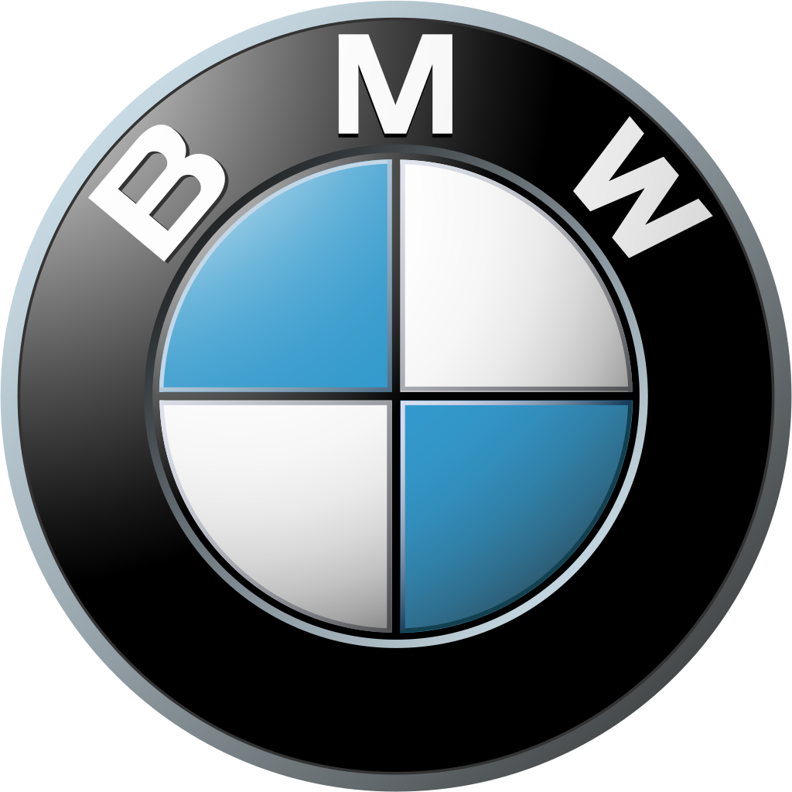

BMW has a rich history dating back to its founding in 1916.
From its early days as an aircraft engine manufacturer to becoming one of the leading luxury car brands in the world, BMW has continually pushed the boundaries of innovation and engineering.
Learn more about the fascinating history of BMW and its impact on the automotive industry.
|  | History | |
| 1916 | Present | |
| Founders | Karl Rapp | Gustav Otto |
| Franz Josef Popp | Camillo Castiglioni | |
| Franz Josef Popp, Karl Rapp, Gustav Otto and Camillo Castiglioni founded Bayerische Flugzeugwerke AG in 1916 which became BMW in 1917. | ||
Back to home.